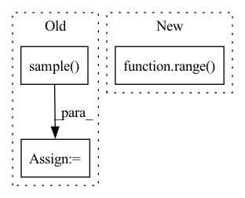

Pattern ID :27646
Before Change
P = 10
points = np.concatenate(
[X.projection(G.sample() ) for _ in range(P)],
axis=1
)
assert points.shape == (X.dim, P)
B = 5
features = np.random.randn(B, in_rep.size, P)
filters = np.zeros((out_rep.size, in_rep.size, basis.dim, P), dtype=np.float)
filters = basis.sample(points, out=filters)
self.assertFalse(np.isnan(filters).any())
self.assertFalse(np.allclose(filters, np.zeros_like(filters)))
a = basis.sample(points)
b = basis.sample(points)
assert np.allclose(a, b)
output = np.einsum("oifp,bip->bof", filters, features)
for g in G.testing_elements():
output1 = np.einsum("oi,bif->bof", out_rep(g), output)
transformed_points = X.action(g) @ points
transformed_filters = basis.sample(transformed_points)
transformed_features = np.einsum("oi,bip->bop", in_rep(g), features)
output2 = np.einsum("oifp,bip->bof", transformed_filters, transformed_features)
if not np.allclose(output1, output2):
print(f"{in_rep.name}, {out_rep.name}: Error at {g}")After Change
output = torch.einsum("oifp,bip->bof", filters, features)
// for g in G.testing_elements():
for _ in range( 50) :
g = G.sample()
output1 = torch.einsum("oi,bif->bof",In pattern: SUPERPATTERN
Frequency: 4
Non-data size: 3
Instances Fragment ID: 82024371
Project Name: quva-lab/escnn
Commit Name: 98a89c5f80da2d489df613d8c73d943c69fb7f51
Time: 2022-08-28
Author: gabriele.cesa@gmail.com
File Name: test/kernelspaces/test_wignereckart.py
M Class Name: TestWEbasis
N Class Name: TestWEbasis
M Method Name: _check_irreps(4)
N Method Name: _check_irreps(4)
M Parent Class: TestCase
N Parent Class: TestCase
M File Name: test/kernelspaces/test_wignereckart.py
N File Name: test/kernelspaces/test_wignereckart.py
M Start Line: 77
M End Line: 119
N Start Line: 67
N End Line: 112
Before Change
d_x_dist = Normal(tar_offset_mean[:, :, 0], torch.tensor([1.0], device=self.device)) // [batch_size, self.N_tar]
d_y_dist = Normal(tar_offset_mean[:, :, 1], torch.tensor([1.0], device=self.device)) // [batch_size, self.N_tar]
d_x = d_x_dist.sample()
d_y = d_y_dist.sample()
// p = tar_candit_pro * d_x_dist.log_prob(d_x) * d_y_dist.log_prob(d_y)
_, indices = tar_candit_prob.topk(self.M, dim=1)After Change
// p = tar_candit_pro * d_x_dist.log_prob(d_x) * d_y_dist.log_prob(d_y)
_, indices = tar_candit_prob.topk(self.M, dim=1)
batch_idx = torch.vstack([torch.arange(0, batch_size, device=self.device) for _ in range( self.M) ]).T
return tar_candidate[batch_idx, indices], offset[batch_idx, indices]
def loss(self, Fragment ID: 82024384
Project Name: henry1iu/tnt-trajectory-predition
Commit Name: 5ede0b555e8fa59b52898db84b5e0d7b0758fca0
Time: 2021-04-26
Author: liu.jb.henry@gmail.com
File Name: core/model/layers/target_prediction.py
M Class Name: TargetPred
N Class Name: TargetPred
M Method Name: forward(3)
N Method Name: forward(3)
M Parent Class: nn.Module
N Parent Class: nn.Module
M File Name: core/model/layers/target_prediction.py
N File Name: core/model/layers/target_prediction.py
M Start Line: 57
M End Line: 72
N Start Line: 57
N End Line: 67
Before Change
P = 10
points = np.concatenate(
[X.projection(_G.sample() ) for _ in range(P)],
axis=1
)
assert points.shape == (X.dim, P)
B = 5
features = np.random.randn(B, in_rep.size, P)
filters = np.zeros((out_rep.size, in_rep.size, basis.dim, P), dtype=np.float)
filters = basis.sample(points, out=filters)
self.assertFalse(np.isnan(filters).any())
self.assertFalse(np.allclose(filters, np.zeros_like(filters)))
a = basis.sample(points)
b = basis.sample(points)
assert np.allclose(a, b)
output = np.einsum("oifp,bip->bof", filters, features)
for g in G.testing_elements():
output1 = np.einsum("oi,bif->bof", out_rep(g), output)
transformed_points = X.action(inclusion(g)) @ points
transformed_filters = basis.sample(transformed_points)
transformed_features = np.einsum("oi,bip->bop", in_rep(g), features)
output2 = np.einsum("oifp,bip->bof", transformed_filters, transformed_features)
if not np.allclose(output1, output2):
print(f"{in_rep.name}, {out_rep.name}: Error at {g}")After Change
output = torch.einsum("oifp,bip->bof", filters, features)
for _ in range( 20) :
g = G.sample()
output1 = torch.einsum("oi,bif->bof", Fragment ID: 82024382
Project Name: quva-lab/escnn
Commit Name: 98a89c5f80da2d489df613d8c73d943c69fb7f51
Time: 2022-08-28
Author: gabriele.cesa@gmail.com
File Name: test/kernelspaces/test_restrictedwignereckart.py
M Class Name: TestWEbasis
N Class Name: TestWEbasis
M Method Name: _check_irreps(6)
N Method Name: _check_irreps(6)
M Parent Class: TestCase
N Parent Class: TestCase
M File Name: test/kernelspaces/test_restrictedwignereckart.py
N File Name: test/kernelspaces/test_restrictedwignereckart.py
M Start Line: 224
M End Line: 274
N Start Line: 309
N End Line: 353